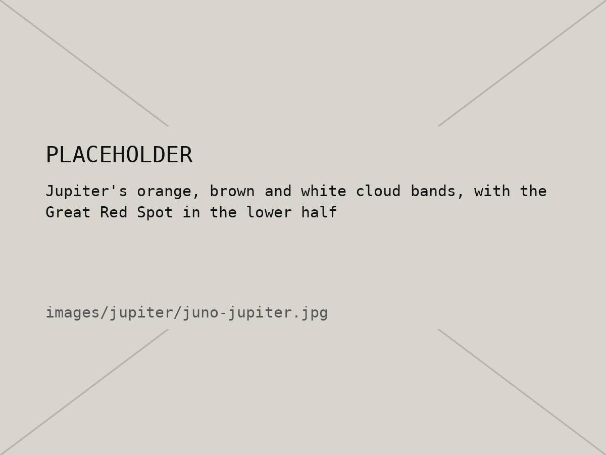
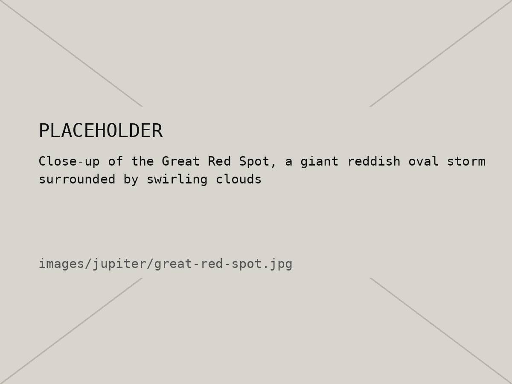

07 / 10 — Planet 5
Jupiter
The biggest planet by far. Mostly gas, mostly storms.
01 — Intro
Jupiter is huge: it's more than twice as massive as all the other planets combined. It's a gas giant, so there's no solid ground to stand on, just layers of hydrogen and helium that get thicker and hotter the deeper you go.
The stripes are bands of clouds dragged around by crazy fast winds, and the Great Red Spot is a storm wider than Earth that's been going for hundreds of years. Jupiter also spins faster than any other planet, so a full day there only lasts about 10 hours.
02 — Quick facts
| Distance from the Sun | About 778 million km (5.2 AU) |
|---|---|
| Diameter | 139,820 km (about 11× Earth) |
| Length of a day | About 10 hours |
| Length of a year | About 12 Earth years |
| Type | Gas giant |
| Moons | 95+ known, including Io, Europa, Ganymede and Callisto |
| Great Red Spot | A storm wider than Earth |
03 — Images


04 — Spin model
A simple model of Jupiter turning. A real Jupiter day is 9 hours 56 minutes. Here it's a few seconds.
Speed: 1×